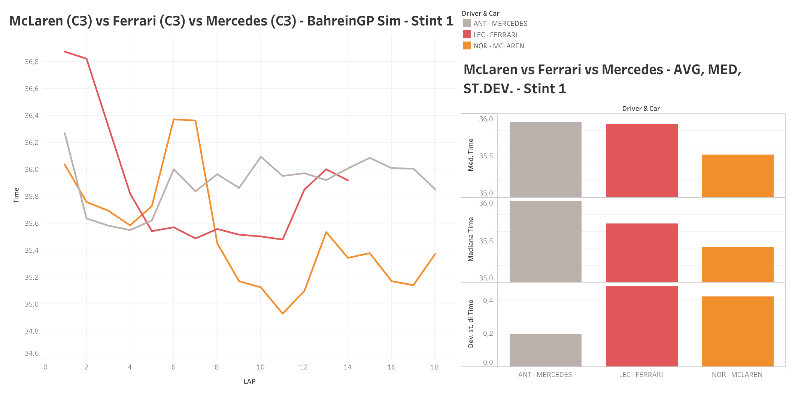
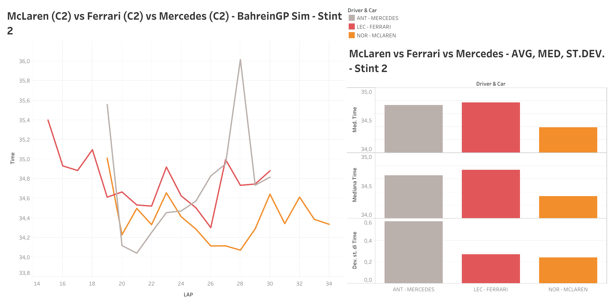
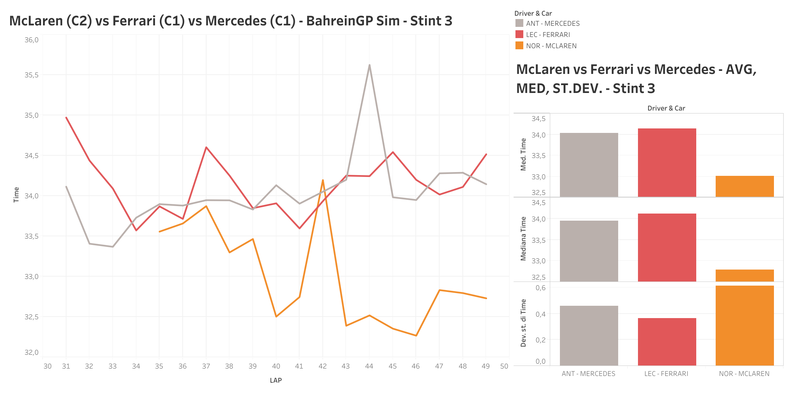

Description
The following visualization will help understand a little bit more about the full grand prix simulations that McLaren, Ferrari, and Mercedes have conducted on the afternoon of the second day of testing respectively with Lando Norris, Charles Leclerc, and Andrea Kimi Antonelli.
First Stint Analysis
- Leclerc has a higher attack time, probably indicating a tyre-saving approach to the stint, similar to the approach that the Ferrari team had during the course of the last season.
- The McLaren is by far the fastest of the three cars during this first stint, whose already impressive average was negatively influenced by a couple of laps spent in traffic.
- The Mercedes is the most consistent of the three, as indicated by the low standard deviation, but that might have been facilitated by being also the slowest of the three cars in this first stint.
Second Stint Analysis
- The McLaren is still the undisputed fastest between the three of them, and, without traffic, now it’s also possible to appreciate its lap time consistency.
- The Ferrari gains in consistency but appears to be the slowest of the three with the medium tyre compound.
- The Mercedes looks better than the Ferrari with this tyre compound, despite the couple of laps spent dealing with traffic.
Third Stint Analysis
- McLaren’s most impressive part of the Grand Prix simulation. 1 second per lap on average faster than the other two. They were using a different compound than Mercedes and Ferrari, a step softer than them, but it doesn’t justify by itself such a big gap.
- Ferrari’s worst stint. It looks like the new car does not like the harder compounds very much.
- Mercedes confirms its historical good feeling with the hard compound. Still far from the McLaren, though.